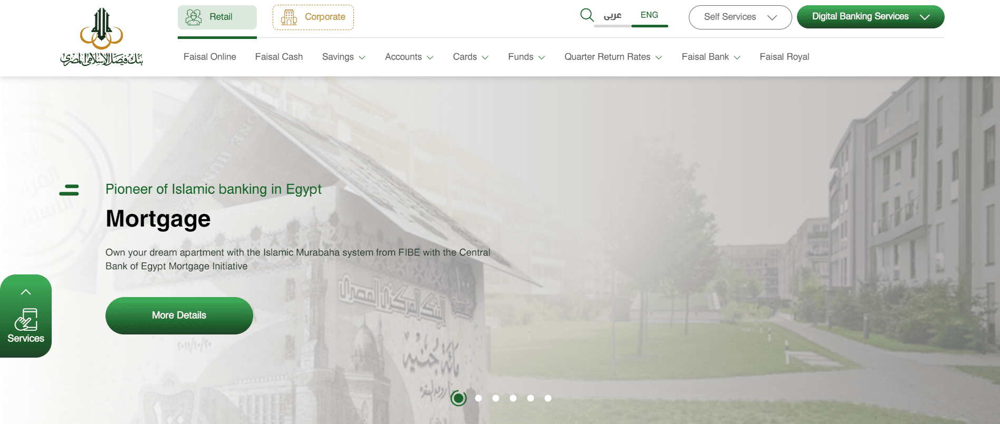
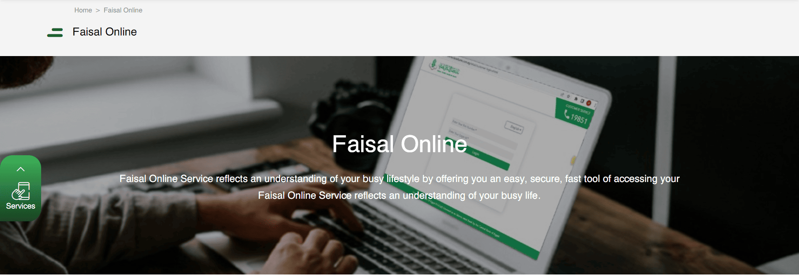
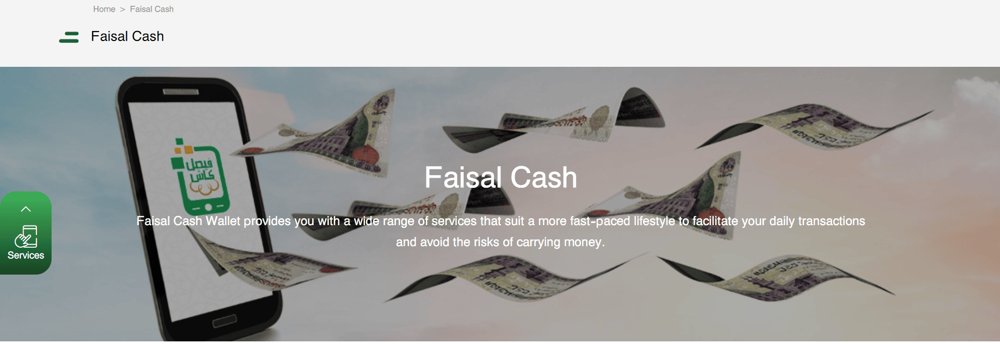

Banking · Web Platform
Faisal Islamic Bank of Egypt
Full redesign of an Islamic banking platform — delivering Sharia-compliant digital banking services with a focus on security, performance, and UX.
Full redesign of an Islamic banking platform — delivering Sharia-compliant digital banking services with a focus on security, performance, and UX.



Faisal Islamic Bank of Egypt's website is a comprehensive online platform providing extensive information and services related to Islamic banking and finance. The site features an overview of the bank's history, mission, and values, emphasising its commitment to Sharia-compliant banking practices. Users can access details about personal and business banking products — including accounts, investments, financing, and e-banking services — alongside social responsibility initiatives, financial reports, and news updates.
As Senior Software Engineer, I oversaw both frontend and backend development. I worked closely with the design team to create a modern, responsive interface and collaborated with backend engineers to ensure secure and efficient data handling. My tasks included configuring SiteCore CMS, developing custom modules, integrating third-party APIs, and ensuring compliance with banking security standards.
Meeting stringent banking security standards required implementing multi-factor authentication, end-to-end data encryption, and secure API integration.
Integrating with legacy banking systems and ensuring real-time data synchronisation required careful planning and robust error handling mechanisms.
Ensuring a consistent and accessible experience across desktop, tablet, and mobile devices for a diverse banking customer base.